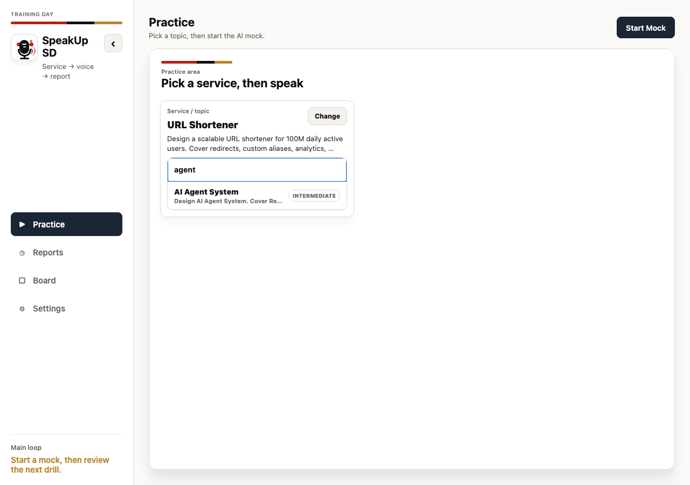
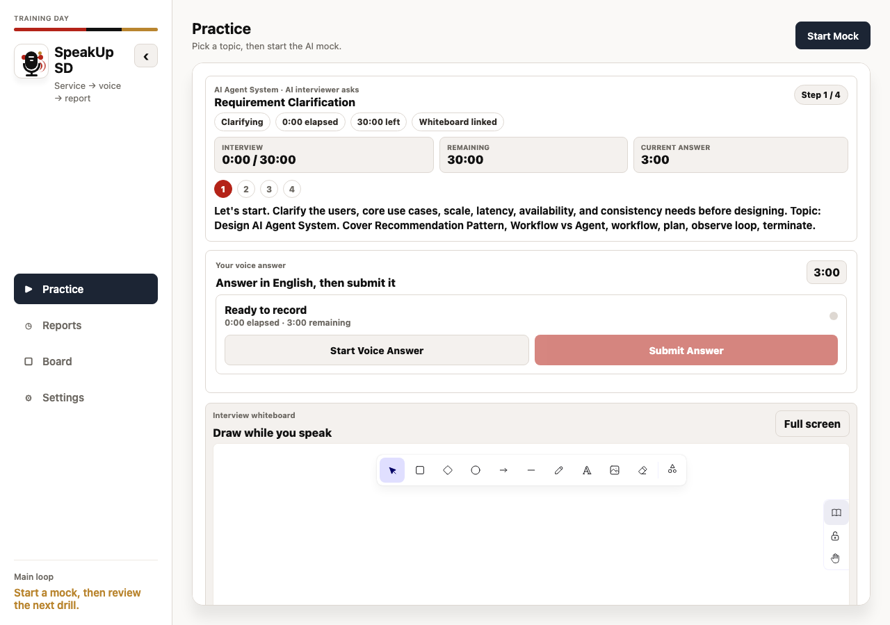
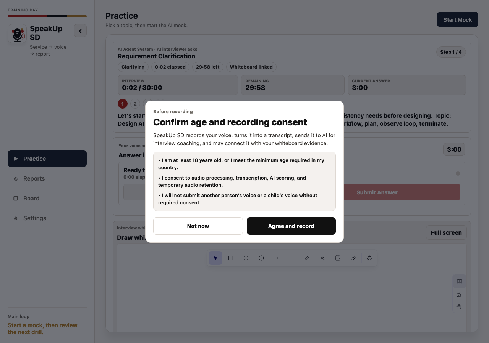

Real product screens
AI interview practice you can actually inspect.
SpeakUp SD combines a serious system design question bank with an AI interview workspace, whiteboard evidence, recording consent, and readiness reports.

Preview real system design prompts and search for AI-agent design topics.
Answer out loud while using the whiteboard as interview evidence.
Use reports to see readiness, skill signals, and the next drill.
Actual UI
The public page should show the product, not only describe it.
These captures show the current product surfaces: question selection, active interview, recording consent, whiteboard, and reports.





Practice Loop
Browse first. Interview second. Review what happened.
The product separates question discovery from the mock interview flow, then connects voice practice, whiteboard work, and reporting into one reviewable training loop.
Public Surface
A product showcase, not a source-code dump.
This repository keeps the product inspectable through screenshots and public links without exposing private app source code, credentials, prompts, or operational material.